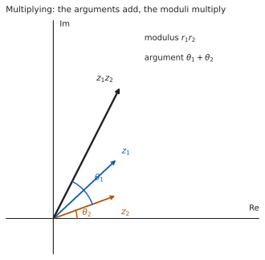
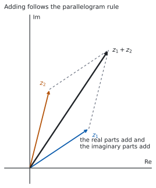

HL 1.13 — Polar and Euler form, products and quotients（極形式と Euler 形、積と商）
- 複素数を \(r(\cos\theta + i\sin\theta)\) の形（polar form）で書ける。
- 同じものを \(re^{i\theta}\) の形（Euler form）で書ける。
- \(a+bi\)・polar form・Euler form のあいだを、どの向きにも行き来できる。
- 極形式のまま、\(2\) つの複素数をかけ・割ることができる。
- 掛け算が回転と拡大にあたることを、図で説明できる。
The idea
1. Modulus–argument form（極形式）
HL 1.12 で、複素数には modulus \(r = \lvert z \rvert\) と argument \(\theta = \arg z\) の \(2\) つがあることを見ました。この \(2\) つだけで、\(z\) が決まります。
HL 1.12 の図にある直角三角形から
\[ a = r\cos\theta, \qquad b = r\sin\theta \]
なので、\(z = a+bi\) に入れると次の形になります。
\[ z = r(\cos\theta + i\sin\theta) \tag{1}\]
これを modulus–argument form（極形式）といいます。\(r\) が長さ、\(\theta\) が向きです。
\(r = 2\)、\(\theta = \dfrac{\pi}{3}\) なら
\[ z = 2\left(\cos\frac{\pi}{3} + i\sin\frac{\pi}{3}\right) = 2\left(\frac{1}{2} + \frac{\sqrt{3}}{2}i\right) = 1 + \sqrt{3}\,i \]
\(\cos\theta + i\sin\theta\) を \(\mathrm{cis}\,\theta\) と書くことがあります。\(\mathbf{c}\)os \(+\) \(\mathbf{i}\) \(\mathbf{s}\)in の頭文字です。公式集にもこの書き方が出てきます。
この本では \(r(\cos\theta + i\sin\theta)\) と \(re^{i\theta}\) を使います。 \(\mathrm{cis}\) は、問題文や公式集で見たときに分かればよい、という扱いにします。
2. Euler form（Euler 形）
同じ \(z\) は、次のようにも書けます。
\[ z = re^{i\theta} \tag{2}\]
これを Euler form といいます。\(e\) は自然対数の底です（SL 2.9）。
公式集の 1.13 の欄に、\(3\) つの形が \(1\) 行に並べて印刷されています。
Modulus-argument (polar) and exponential (Euler) form
\(z = r(\cos\theta + i\sin\theta) = re^{i\theta} = r\,\mathrm{cis}\,\theta\)
等号で結ばれているとおり、\(3\) つは同じ数の \(3\) 通りの書き方です。 覚える必要はありません。覚えるのは、どの形が、どの計算に向いているかのほうです（第 4 節）。
\(e^{i\theta}\) は、いまは「長さ \(1\) で、向きが \(\theta\) の数」を表す記号だと思ってください。\(\theta\) を指数の位置に書くところが要で、そのおかげで掛け算が足し算になります（第 4 節）。
なぜ \(e\) が出てくるのかは Why it works に置きました。証明は AHL 5.19 の級数まで待ちます。
式 2 で \(r = 1\)、\(\theta = \pi\) とすると \(e^{i\pi} = \cos\pi + i\sin\pi = -1\) です。移項すれば
\[ e^{i\pi} + 1 = 0 \]
となり、\(e\)、\(i\)、\(\pi\)、\(1\)、\(0\) が \(1\) つの式に並びます。Euler の等式と呼ばれます。
3. Converting between the forms（形のあいだを行き来する）
シラバスは、この行き来をはっきり求めています。
The ability to convert between Cartesian, modulus-argument (polar) and Euler form is expected.
| 向き | やること |
|---|---|
| \(a+bi\) → 極形式・Euler 形 | \(r = \sqrt{a^{2}+b^{2}}\) と、象限を見てから \(\theta\)（HL 1.12） |
| 極形式・Euler 形 → \(a+bi\) | \(a = r\cos\theta\)、\(b = r\sin\theta\) を計算する |
| 極形式 ⇄ Euler 形 | \(r\) と \(\theta\) をそのまま移すだけ |
\(z = 4i\) で見ます。\(r = 4\) で、\(4i\) は虚軸の正の側にあるので \(\theta = \dfrac{\pi}{2}\) です。
\[ 4i = 4\left(\cos\frac{\pi}{2} + i\sin\frac{\pi}{2}\right) = 4e^{i\pi/2} \]
極形式と Euler 形のあいだは、書き写すだけです。 手間がかかるのは \(a+bi\) との行き来のほうです。
4. Multiplication: multiply the moduli, add the arguments（掛け算：長さはかけ算、角は足し算）
Euler 形の値打ちは、ここに出ます。指数法則 \(e^{x}e^{y} = e^{x+y}\)（SL 1.5）から
\[ \left(r_{1}e^{i\theta_{1}}\right)\left(r_{2}e^{i\theta_{2}}\right) = r_{1}r_{2}\,e^{i(\theta_{1}+\theta_{2})} \tag{3}\]

絶対値どうしは掛け算、偏角どうしは足し算です（図 1）。
\[ \lvert z_{1}z_{2} \rvert = \lvert z_{1} \rvert \lvert z_{2} \rvert, \qquad \arg(z_{1}z_{2}) = \arg z_{1} + \arg z_{2} \tag{4}\]
\(z_{1} = 2e^{i\pi/3}\)、\(z_{2} = 3e^{i\pi/6}\) なら
\[ z_{1}z_{2} = 6\,e^{i(\pi/3 + \pi/6)} = 6e^{i\pi/2} = 6i \]
\(a+bi\) の形で同じことをすると、展開が必要です。 掛け算は、極形式のほうが軽くすみます。
式 4 の足し算は、\(2\pi\) の差を無視すれば正しい式です。ただし \(\arg z_{1} + \arg z_{2}\) が \(-\pi < \theta \leq \pi\) から出てしまうことがあります。
たとえば \(\arg z_{1} = \arg z_{2} = \dfrac{3\pi}{4}\) なら、和は \(\dfrac{3\pi}{2}\) です。主値で答えるなら \(2\pi\) を引いて \(-\dfrac{\pi}{2}\) にします。
\(2\pi\) を足し引きしても、指す点は変わりません。 答えの範囲が指定されているときだけ、直してください。
5. Division: divide the moduli, subtract the arguments（割り算：長さは割り算、角は引き算）
同じ指数法則から
\[ \frac{r_{1}e^{i\theta_{1}}}{r_{2}e^{i\theta_{2}}} = \frac{r_{1}}{r_{2}}\,e^{i(\theta_{1}-\theta_{2})} \tag{5}\]
です（\(r_{2} \neq 0\)）。上の \(z_{1}\)、\(z_{2}\) なら
\[ \frac{z_{1}}{z_{2}} = \frac{2}{3}e^{i(\pi/3 - \pi/6)} = \frac{2}{3}e^{i\pi/6} \]
共役を掛ける必要がありません（HL 1.12）。割り算も、極形式のほうが軽くすみます。
6. Rotation and enlargement（図形的な意味：回転と拡大）
式 3 を、\(z_{2}\) をかける操作として読み直します。
\(re^{i\theta}\) をかけることは、原点のまわりに \(\theta\) だけ回し、原点からの距離を \(r\) 倍することです。
\(r = 1\) なら、回すだけです。 いちばん短い例が \(i\) です。\(i = 1 \cdot e^{i\pi/2}\) なので、\(i\) をかけることは \(\dfrac{\pi}{2}\) の回転です。
\[ i(3+2i) = 3i + 2i^{2} = -2+3i \]
点 \((3,\ 2)\) が点 \((-2,\ 3)\) に移りました。確かに \(90^{\circ}\) 回っています。
\(\theta = 0\) なら、拡大・縮小だけです。 実数をかけることが、それにあたります。
7. Addition is done in Cartesian form（足し算は \(a+bi\) の形で）
足し算だけは、極形式が向きません。 \(r_{1}e^{i\theta_{1}} + r_{2}e^{i\theta_{2}}\) は、これ以上まとめられないからです。

足し算は \(a+bi\) の形にしてから、実部どうし・虚部どうしを足します。 図で見ると、図 2 のように平行四辺形の対角線です。矢印のつなぎ方は、ベクトルの足し算と同じです。
\[ (3+2i) + (1+4i) = 4 + 6i \]
| したいこと | 向いている形 |
|---|---|
| 足し算・引き算 | \(a+bi\) |
| 掛け算・割り算 | 極形式・Euler 形 |
| 累乗・\(n\) 乗根 | Euler 形（HL 1.14） |
TI-Nspire CX II は複素数をそのまま計算できるので、極形式で出した積や商を \(a+bi\) に直したものと、\(a+bi\) のまま計算したものを見くらべられます。
\(2\) つの道すじが同じ答えになれば、偏角の足し引きが合っています。
Paper 1 では使えません。 ですから、このページの例題と演習は、すべて手で出せる角にしてあります。
Why it works
なぜ、長さ \(1\) で向きが \(\theta\) の数を \(e^{i\theta}\) と書いてよいのでしょうか。
\(e\) を使う理由は、指数法則が、そのまま「角の足し算」になってほしいからです。式 3 で見たとおり、掛け算は角を足します。指数の記号は、掛け算を足し算に変える唯一の道具です。
そこで \(f(\theta) = \cos\theta + i\sin\theta\) が、本当に指数法則を満たすかを確かめます。\(f(\theta_{1})f(\theta_{2})\) を展開すると
\[ (\cos\theta_{1} + i\sin\theta_{1})(\cos\theta_{2} + i\sin\theta_{2}) \]
\[ = (\cos\theta_{1}\cos\theta_{2} - \sin\theta_{1}\sin\theta_{2}) + i(\sin\theta_{1}\cos\theta_{2} + \cos\theta_{1}\sin\theta_{2}) \]
です。ここで compound angle identities（加法定理、AHL 3.10）を使うと、実部は \(\cos(\theta_{1}+\theta_{2})\)、虚部は \(\sin(\theta_{1}+\theta_{2})\) です。つまり
\[ f(\theta_{1})f(\theta_{2}) = f(\theta_{1}+\theta_{2}) \]
掛けると、中身が足し算になりました。 これは \(e^{x}e^{y} = e^{x+y}\) とまったく同じ形です。だから \(f(\theta)\) を \(e^{i\theta}\) と書くと、つじつまが合います。
「合う」と「等しい」はちがいます
ここで示したのは、\(f(\theta)\) が指数関数と同じ規則に従うことだけです。\(f(\theta)\) が本当に \(e\) の累乗そのものであることは、\(e^{x}\)・\(\cos x\)・\(\sin x\) を級数で書いて見くらべると分かります。それは AHL 5.19 で扱います。
Worked examples
問題文は英語です。意味が理解できなかったら、問題文の下の「日本語訳」を開いてください。解説は日本語です。
例題も演習も、すべて電卓なしで解けます。 Paper 1 のつもりで解いてください。
例題 1 Let \(z = 1-i\).
(a) Write \(z\) in modulus–argument form.
(b) Write \(z\) in Euler form.
日本語訳
\(z = 1-i\) とします。
(a) \(z\) を極形式で書きなさい。
(b) \(z\) を Euler 形で書きなさい。
(a) まず \(r\) を出します。
\[ r = \sqrt{1^{2}+(-1)^{2}} = \sqrt{2} \]
実部が正、虚部が負なので、\(z\) は第 \(4\) 象限にあります。基準の角は \(\arctan 1 = \dfrac{\pi}{4}\) なので
\[ \theta = -\frac{\pi}{4} \]
\[ z = \sqrt{2}\left(\cos\left(-\frac{\pi}{4}\right) + i\sin\left(-\frac{\pi}{4}\right)\right) \]
(b) \(r\) と \(\theta\) を、そのまま 式 2 に移します（表 1）。
\[ z = \sqrt{2}\,e^{-i\pi/4} \]
検算。 極形式から \(a+bi\) に戻します。
\[ \sqrt{2}\cos\left(-\frac{\pi}{4}\right) = \sqrt{2} \times \frac{1}{\sqrt{2}} = 1, \qquad \sqrt{2}\sin\left(-\frac{\pi}{4}\right) = \sqrt{2} \times \left(-\frac{1}{\sqrt{2}}\right) = -1 \]
\(1-i\) に戻りました ✓ 象限をまちがえていれば、ここで符号が合いません。
検算（絶対値で）。 \(\lvert z \rvert^{2} = z z^{*} = 1^{2}+(-1)^{2} = 2\) なので \(r = \sqrt{2}\) です ✓ 根号の計算を別の道すじで確かめています。
\(\theta = \dfrac{\pi}{4}\) としていたら、戻したとき \(1+i\) になります。虚部の符号を見てください。
(a) \(r = \sqrt{1+1} = \sqrt{2}\), and \(z\) is in the fourth quadrant, so \(\theta = -\dfrac{\pi}{4}\).
\[z = \sqrt{2}\left(\cos\left(-\frac{\pi}{4}\right) + i\sin\left(-\frac{\pi}{4}\right)\right)\]
(b) \[z = \sqrt{2}\,e^{-i\pi/4}\]
例題 2 Write \(z = 6e^{i5\pi/6}\) in the form \(a+bi\), where \(a,b \in \mathbb{R}\).
日本語訳
\(z = 6e^{i5\pi/6}\) を、\(a\)、\(b\) を実数として \(a+bi\) の形で書きなさい。
\(r = 6\)、\(\theta = \dfrac{5\pi}{6}\) です。式 1 を使います。
\[ z = 6\left(\cos\frac{5\pi}{6} + i\sin\frac{5\pi}{6}\right) \]
\(\dfrac{5\pi}{6}\) は第 \(2\) 象限の角で、基準の角は \(\dfrac{\pi}{6}\) です（SL 3.5）。
\[ \cos\frac{5\pi}{6} = -\frac{\sqrt{3}}{2}, \qquad \sin\frac{5\pi}{6} = \frac{1}{2} \]
\[ z = 6\left(-\frac{\sqrt{3}}{2} + \frac{1}{2}i\right) = -3\sqrt{3} + 3i \]
検算。 \(a+bi\) から極形式に戻します。
\[ \lvert z \rvert = \sqrt{27+9} = \sqrt{36} = 6 \]
\(r = 6\) に戻りました ✓ 実部が負・虚部が正なので第 \(2\) 象限にあり、\(\dfrac{5\pi}{6}\) と合っています。
検算（比で）。 \(\dfrac{b}{a} = \dfrac{3}{-3\sqrt{3}} = -\dfrac{1}{\sqrt{3}}\) で、\(\tan\dfrac{5\pi}{6} = -\dfrac{1}{\sqrt{3}}\) です ✓ 絶対値とは別のところを見ています。
\(\cos\dfrac{5\pi}{6}\) を \(+\dfrac{\sqrt{3}}{2}\) としていたら、答えは \(3\sqrt{3}+3i\) になり、第 \(1\) 象限の数になってしまいます。第 \(2\) 象限では \(\cos\) が負です。
\[z = 6\left(\cos\frac{5\pi}{6} + i\sin\frac{5\pi}{6}\right) = 6\left(-\frac{\sqrt{3}}{2} + \frac{1}{2}i\right)\]
\[= -3\sqrt{3} + 3i\]
例題 3 Let \(z_{1} = 4e^{i\pi/4}\) and \(z_{2} = 2e^{i\pi/12}\).
(a) Find \(z_{1}z_{2}\), giving your answer in Euler form.
(b) Find \(\dfrac{z_{1}}{z_{2}}\), giving your answer in Euler form.
(c) Explain, in terms of a transformation of the complex plane, what multiplying by \(z_{2}\) does to the point representing \(z_{1}\).
日本語訳
\(z_{1} = 4e^{i\pi/4}\)、\(z_{2} = 2e^{i\pi/12}\) とします。
(a) \(z_{1}z_{2}\) を Euler 形で求めなさい。
(b) \(\dfrac{z_{1}}{z_{2}}\) を Euler 形で求めなさい。
(c) \(z_{2}\) をかけることが、\(z_{1}\) を表す点にどんな変換をほどこすことになるかを説明しなさい。
(a) 式 3 です。長さは掛け算、角は足し算です。
\[ \frac{\pi}{4} + \frac{\pi}{12} = \frac{3\pi}{12} + \frac{\pi}{12} = \frac{4\pi}{12} = \frac{\pi}{3} \]
\[ z_{1}z_{2} = 8e^{i\pi/3} \]
(b) 式 5 です。長さは割り算、角は引き算です。
\[ \frac{\pi}{4} - \frac{\pi}{12} = \frac{2\pi}{12} = \frac{\pi}{6} \]
\[ \frac{z_{1}}{z_{2}} = 2e^{i\pi/6} \]
(c) Explain なので、英語で書きます。
試験ではこう書く
Multiplying by \(z_{2} = 2e^{i\pi/12}\) rotates the point representing \(z_{1}\) anticlockwise about the origin through an angle of \(\dfrac{\pi}{12}\), and at the same time enlarges its distance from the origin by a scale factor of \(2\). This is because the moduli multiply and the arguments add, so the new modulus is \(2 \times 4 = 8\) and the new argument is \(\dfrac{\pi}{4} + \dfrac{\pi}{12} = \dfrac{\pi}{3}\).
（\(z_{2}\) をかけることは、原点のまわりに \(\dfrac{\pi}{12}\) だけ反時計回りに回し、同時に原点からの距離を \(2\) 倍にすることである、という意味です。）
検算（(a) について）。 \(a+bi\) の形でも出してみます。 \(z_{1} = 4\left(\dfrac{1}{\sqrt{2}} + \dfrac{1}{\sqrt{2}}i\right) = 2\sqrt{2}(1+i)\) で、答えの \(8e^{i\pi/3}\) は
\[ 8\left(\frac{1}{2} + \frac{\sqrt{3}}{2}i\right) = 4 + 4\sqrt{3}\,i \]
です。\(\lvert 4+4\sqrt{3}i \rvert = \sqrt{16+48} = \sqrt{64} = 8\) で、\(\lvert z_{1} \rvert\lvert z_{2} \rvert = 4 \times 2 = 8\) と一致しました ✓
検算（(a) と (b) の関係）。 \((z_{1}z_{2}) \div \left(\dfrac{z_{1}}{z_{2}}\right) = z_{2}^{2}\) のはずです。
\[ \frac{8e^{i\pi/3}}{2e^{i\pi/6}} = 4e^{i\pi/6}, \qquad z_{2}^{2} = \left(2e^{i\pi/12}\right)^{2} = 4e^{i\pi/6} \]
一致しました ✓ (a) と (b) を別々にまちがえていないかが、これで分かります。
角の足し算で通分を忘れて \(\dfrac{\pi}{4}+\dfrac{\pi}{12} = \dfrac{2\pi}{16}\) としていたら、\(\dfrac{\pi}{8}\) になります。分母がちがう分数は、そのまま足せません。
(a) \[z_{1}z_{2} = (4)(2)e^{i\left(\frac{\pi}{4}+\frac{\pi}{12}\right)} = 8e^{i\pi/3}\]
(b) \[\frac{z_{1}}{z_{2}} = \frac{4}{2}e^{i\left(\frac{\pi}{4}-\frac{\pi}{12}\right)} = 2e^{i\pi/6}\]
(c) Multiplying by \(z_{2}\) rotates the point anticlockwise about the origin through \(\dfrac{\pi}{12}\) and enlarges its distance from the origin by scale factor \(2\).
例題 4 The complex number \(z\) has \(\lvert z \rvert = 3\) and \(\arg z = \dfrac{\pi}{6}\). The point representing \(z\) is rotated anticlockwise about the origin through \(\dfrac{\pi}{2}\) to give the point representing \(w\).
(a) Write \(w\) in Euler form.
(b) Hence write \(w\) in the form \(a+bi\).
(c) Explain why \(w = iz\).
日本語訳
複素数 \(z\) は \(\lvert z \rvert = 3\)、\(\arg z = \dfrac{\pi}{6}\) をみたします。\(z\) を表す点を、原点のまわりに反時計回りに \(\dfrac{\pi}{2}\) だけ回した点が \(w\) を表します。
(a) \(w\) を Euler 形で書きなさい。
(b) それを使って、\(w\) を \(a+bi\) の形で書きなさい。
(c) \(w = iz\) となる理由を説明しなさい。
(a) 回しただけなので、長さは変わりません。 角だけが \(\dfrac{\pi}{2}\) 増えます。
\[ \frac{\pi}{6} + \frac{\pi}{2} = \frac{\pi}{6} + \frac{3\pi}{6} = \frac{4\pi}{6} = \frac{2\pi}{3} \]
\[ w = 3e^{i2\pi/3} \]
(b) 式 1 に入れます。\(\dfrac{2\pi}{3}\) は第 \(2\) 象限の角です。
\[ w = 3\left(-\frac{1}{2} + \frac{\sqrt{3}}{2}i\right) = -\frac{3}{2} + \frac{3\sqrt{3}}{2}i \]
(c) Explain why なので、英語で理由を書きます。
試験ではこう書く
In Euler form \(i = e^{i\pi/2}\), since \(\lvert i \rvert = 1\) and \(\arg i = \dfrac{\pi}{2}\). Multiplying two complex numbers multiplies their moduli and adds their arguments, so multiplying \(z\) by \(i\) leaves the modulus unchanged (because the modulus of \(i\) is \(1\)) and increases the argument by \(\dfrac{\pi}{2}\). That is exactly an anticlockwise rotation through \(\dfrac{\pi}{2}\) about the origin, so \(w = iz\).
（\(i\) は Euler 形で \(e^{i\pi/2}\) である。掛け算では絶対値がかけ算、偏角が足し算になるので、\(i\) をかけると長さは変わらず角だけが \(\dfrac{\pi}{2}\) 増える、という意味です。）
検算。 \(iz\) を直接計算します。 \(z = 3\left(\dfrac{\sqrt{3}}{2} + \dfrac{1}{2}i\right) = \dfrac{3\sqrt{3}}{2} + \dfrac{3}{2}i\) なので
\[ iz = i\left(\frac{3\sqrt{3}}{2} + \frac{3}{2}i\right) = \frac{3\sqrt{3}}{2}i + \frac{3}{2}i^{2} = -\frac{3}{2} + \frac{3\sqrt{3}}{2}i \]
(b) と一致しました ✓ 極形式をまったく使わない道すじです。
検算（絶対値で）。 \(\lvert w \rvert = \sqrt{\dfrac{9}{4} + \dfrac{27}{4}} = \sqrt{9} = 3\) で、\(\lvert z \rvert\) と同じです ✓ 回転では長さが変わらないことが確かめられました。
\(\dfrac{\pi}{6}+\dfrac{\pi}{2}\) を \(\dfrac{\pi}{8}\) としていたら、分母どうしを足しています。通分してから足してください。
(a) Rotation does not change the modulus, and it adds \(\dfrac{\pi}{2}\) to the argument.
\[w = 3e^{i\left(\frac{\pi}{6}+\frac{\pi}{2}\right)} = 3e^{i2\pi/3}\]
(b) \[w = 3\left(\cos\frac{2\pi}{3} + i\sin\frac{2\pi}{3}\right) = -\frac{3}{2} + \frac{3\sqrt{3}}{2}i\]
(c) \(i = e^{i\pi/2}\), so multiplying by \(i\) multiplies the modulus by \(1\) and adds \(\dfrac{\pi}{2}\) to the argument, which is the required rotation.
Common errors
式 1 の形は \(\cos\theta + i\sin\theta\) です。あいだは \(+\) でなければなりません。
\(\cos\theta - i\sin\theta\) が出てきたら、\(\cos(-\theta) = \cos\theta\)、\(\sin(-\theta) = -\sin\theta\) を使って
\[ \cos\theta - i\sin\theta = \cos(-\theta) + i\sin(-\theta) \]
と直します。偏角は \(-\theta\) です。
Euler 形の \(\theta\) は radian です。\(e^{i \cdot 60^{\circ}}\) とは書けません。
極形式でも、AA HL では radian で書きます（HL 1.12）。\(\dfrac{\pi}{3}\) を \(60\) と書かないでください。
\(a+bi\) から極形式に直すときは、必ず象限を見ます（HL 1.12）。\(\arctan\dfrac{b}{a}\) の値をそのまま使うと、第 \(2\)・第 \(3\) 象限で \(\pi\) だけずれます。
簡単な図をかいてから答えてください。 \(a\) と \(b\) の符号を見るだけで足ります。
\(r_{1}e^{i\theta_{1}} + r_{2}e^{i\theta_{2}}\) は、そのままではまとめられません（第 7 節）。
\(a+bi\) に直してから足します。 極形式が軽いのは掛け算と割り算のときで、足し算のときではありません。
\(r\) は原点からの距離なので、\(0\) 以上です。\(-2e^{i\pi/3}\) は極形式の答えになりません。
\(-1 = e^{i\pi}\) なので、符号は角のほうに入れます。
\[ -2e^{i\pi/3} = 2e^{i(\pi/3 + \pi)} = 2e^{i4\pi/3} = 2e^{-i2\pi/3} \]
最後の等号では、\(2\pi\) を引いて主値の範囲に直しました。
Exercises
各問題に、折りたたみが \(3\) つ付いています。日本語訳、解答例（答案用紙に書くべきこと。英語です）、解説（なぜそうなるか。日本語です）。
まず自分で解いて、次に解答例と見くらべてください。解説は、合わなかったときだけ開けば十分です。
1 Write \(z = 3+3i\) in modulus–argument form and in Euler form.
日本語訳
\(z = 3+3i\) を、極形式と Euler 形で書きなさい。
\[r = \sqrt{9+9} = 3\sqrt{2}, \qquad \theta = \frac{\pi}{4}\]
\[z = 3\sqrt{2}\left(\cos\frac{\pi}{4} + i\sin\frac{\pi}{4}\right) = 3\sqrt{2}\,e^{i\pi/4}\]
実部も虚部も正なので、\(z\) は第 \(1\) 象限にあります。この象限では \(\arctan\dfrac{b}{a}\) をそのまま使えます。\(\arctan 1 = \dfrac{\pi}{4}\) です。
検算。 極形式から \(a+bi\) に戻します。
\[ 3\sqrt{2}\cos\frac{\pi}{4} = 3\sqrt{2} \times \frac{1}{\sqrt{2}} = 3, \qquad 3\sqrt{2}\sin\frac{\pi}{4} = 3 \]
\(3+3i\) に戻りました ✓
\(r\) を \(\sqrt{9+9} = \sqrt{18}\) で止めないでください。 \(\sqrt{18} = 3\sqrt{2}\) まで直します。
2 Write \(z = -5i\) in Euler form.
日本語訳
\(z = -5i\) を Euler 形で書きなさい。
\[r = 5, \qquad \theta = -\frac{\pi}{2}\]
\[z = 5e^{-i\pi/2}\]
\(-5i\) は虚軸の負の側にあります。実部が \(0\) なので \(\arctan\dfrac{b}{a}\) は使えません。図で見るのがいちばん速いです。
\(-\pi < \theta \leq \pi\) の範囲では \(-\dfrac{\pi}{2}\) です。\(\dfrac{3\pi}{2}\) は範囲の外です。
検算。 戻します。\(5\cos\left(-\dfrac{\pi}{2}\right) = 0\)、\(5\sin\left(-\dfrac{\pi}{2}\right) = -5\) なので \(0 - 5i = -5i\) ✓
\(r = -5\) としないでください。 絶対値は \(0\) 以上です。符号は角のほうに入れます。
3 Write \(z = 4e^{i\pi/3}\) in the form \(a+bi\), where \(a,b \in \mathbb{R}\).
日本語訳
\(z = 4e^{i\pi/3}\) を、\(a\)、\(b\) を実数として \(a+bi\) の形で書きなさい。
\[z = 4\left(\cos\frac{\pi}{3} + i\sin\frac{\pi}{3}\right) = 4\left(\frac{1}{2} + \frac{\sqrt{3}}{2}i\right) = 2 + 2\sqrt{3}\,i\]
\(\cos\dfrac{\pi}{3} = \dfrac{1}{2}\)、\(\sin\dfrac{\pi}{3} = \dfrac{\sqrt{3}}{2}\) です（SL 3.5）。
検算。 絶対値で戻します。
\[ \lvert 2+2\sqrt{3}i \rvert = \sqrt{4 + 12} = \sqrt{16} = 4 \]
\(r = 4\) に戻りました ✓ 実部も虚部も正なので第 \(1\) 象限にあり、\(\dfrac{\pi}{3}\) と合っています。
\(\cos\dfrac{\pi}{3}\) と \(\sin\dfrac{\pi}{3}\) を取りちがえると、答えは \(2\sqrt{3}+2i\) になります。絶対値は同じ \(4\) なので、絶対値の検算だけでは見つかりません。 象限の中のどこにあるかを、図で見てください。
4 Write \(z = 2\left(\cos\dfrac{3\pi}{4} + i\sin\dfrac{3\pi}{4}\right)\) in the form \(a+bi\).
日本語訳
\(z = 2\left(\cos\dfrac{3\pi}{4} + i\sin\dfrac{3\pi}{4}\right)\) を \(a+bi\) の形で書きなさい。
\[z = 2\left(-\frac{1}{\sqrt{2}} + \frac{1}{\sqrt{2}}i\right) = -\sqrt{2} + \sqrt{2}\,i\]
\(\dfrac{3\pi}{4}\) は第 \(2\) 象限の角なので、\(\cos\) は負、\(\sin\) は正です。基準の角は \(\dfrac{\pi}{4}\) です。
\(\dfrac{2}{\sqrt{2}} = \sqrt{2}\) です。分母に根号を残さない形まで直してください。
検算。 絶対値で戻します。\(\sqrt{2+2} = 2\) ✓ 実部が負・虚部が正なので第 \(2\) 象限で、\(\dfrac{3\pi}{4}\) と合っています。
\(\cos\dfrac{3\pi}{4}\) を正にしていたら、第 \(1\) 象限の数になります。象限と符号が合っているかを、最後に見てください。
5 Let \(z_{1} = 6e^{i5\pi/12}\) and \(z_{2} = 2e^{i\pi/4}\).
(a) Find \(z_{1}z_{2}\), giving your answer in Euler form.
(b) Find \(\dfrac{z_{1}}{z_{2}}\), giving your answer in Euler form.
日本語訳
\(z_{1} = 6e^{i5\pi/12}\)、\(z_{2} = 2e^{i\pi/4}\) とします。
(a) \(z_{1}z_{2}\) を Euler 形で求めなさい。
(b) \(\dfrac{z_{1}}{z_{2}}\) を Euler 形で求めなさい。
(a) \(\dfrac{5\pi}{12} + \dfrac{\pi}{4} = \dfrac{5\pi}{12} + \dfrac{3\pi}{12} = \dfrac{8\pi}{12} = \dfrac{2\pi}{3}\)
\[z_{1}z_{2} = 12e^{i2\pi/3}\]
(b) \(\dfrac{5\pi}{12} - \dfrac{\pi}{4} = \dfrac{2\pi}{12} = \dfrac{\pi}{6}\)
\[\frac{z_{1}}{z_{2}} = 3e^{i\pi/6}\]
角は \(12\) を分母にそろえてから足し引きします。
検算。 (a) を (b) で割ると \(z_{2}^{2}\) になるはずです。
\[ \frac{12e^{i2\pi/3}}{3e^{i\pi/6}} = 4e^{i\pi/2}, \qquad z_{2}^{2} = \left(2e^{i\pi/4}\right)^{2} = 4e^{i\pi/2} \]
一致しました ✓ (a) と (b) を別々にまちがえていないかが分かります。
絶対値だけでも見ておけます。 \(6 \times 2 = 12\)、\(6 \div 2 = 3\) ✓ ただしこれでは角のまちがいは見つかりません。
6 Let \(z = (1+i)\left(\sqrt{3}+i\right)\). Find \(\lvert z \rvert\) and \(\arg z\).
日本語訳
\(z = (1+i)\left(\sqrt{3}+i\right)\) とします。\(\lvert z \rvert\) と \(\arg z\) を求めなさい。
\[\lvert 1+i \rvert = \sqrt{2}, \quad \arg(1+i) = \frac{\pi}{4}; \qquad \lvert \sqrt{3}+i \rvert = 2, \quad \arg\left(\sqrt{3}+i\right) = \frac{\pi}{6}\]
\[\lvert z \rvert = \sqrt{2} \times 2 = 2\sqrt{2}, \qquad \arg z = \frac{\pi}{4} + \frac{\pi}{6} = \frac{5\pi}{12}\]
展開しなくても出せます。 式 4 をそのまま使います。
\(1+i\) も \(\sqrt{3}+i\) も第 \(1\) 象限にあるので、偏角はどちらも \(\arctan\dfrac{b}{a}\) です。
検算。 展開してから絶対値を出します。
\[ (1+i)\left(\sqrt{3}+i\right) = \sqrt{3} + i + \sqrt{3}\,i - 1 = \left(\sqrt{3}-1\right) + \left(\sqrt{3}+1\right)i \]
\[ \lvert z \rvert^{2} = \left(\sqrt{3}-1\right)^{2} + \left(\sqrt{3}+1\right)^{2} = (4 - 2\sqrt{3}) + (4 + 2\sqrt{3}) = 8 \]
\(\lvert z \rvert = \sqrt{8} = 2\sqrt{2}\) ✓ 極形式をまったく使わない道すじです。
\(\arg z\) のほうも見ておきます。 \(\tan\dfrac{5\pi}{12} = 2+\sqrt{3}\) で、展開した式の \(\dfrac{b}{a} = \dfrac{\sqrt{3}+1}{\sqrt{3}-1}\) は、分母を有理化すると \(\dfrac{(\sqrt{3}+1)^{2}}{2} = \dfrac{4+2\sqrt{3}}{2} = 2+\sqrt{3}\) です ✓
7 Let \(z = 8e^{i2\pi/3}\) and \(w = 4e^{i\pi/6}\). Find \(\dfrac{z}{w}\), giving your answer in the form \(a+bi\).
日本語訳
\(z = 8e^{i2\pi/3}\)、\(w = 4e^{i\pi/6}\) とします。\(\dfrac{z}{w}\) を \(a+bi\) の形で求めなさい。
\[\frac{z}{w} = \frac{8}{4}e^{i\left(\frac{2\pi}{3}-\frac{\pi}{6}\right)} = 2e^{i\pi/2}\]
\[= 2\left(\cos\frac{\pi}{2} + i\sin\frac{\pi}{2}\right) = 2i\]
\(\dfrac{2\pi}{3} - \dfrac{\pi}{6} = \dfrac{4\pi}{6} - \dfrac{\pi}{6} = \dfrac{3\pi}{6} = \dfrac{\pi}{2}\) です。
\(\cos\dfrac{\pi}{2} = 0\)、\(\sin\dfrac{\pi}{2} = 1\) なので、実部は \(0\) です。
検算。 答えに \(w\) を掛けて、\(z\) に戻るかを見ます。
\[ 2e^{i\pi/2} \times 4e^{i\pi/6} = 8e^{i\left(\frac{\pi}{2}+\frac{\pi}{6}\right)} = 8e^{i2\pi/3} \]
\(z\) に戻りました ✓ 割り算をやり直したのではなく、逆向きの操作です。
角を引く向きを逆にして \(\dfrac{\pi}{6} - \dfrac{2\pi}{3} = -\dfrac{\pi}{2}\) としていたら、答えは \(-2i\) になります。割られるほうの角から、割るほうの角を引きます。
8 Explain why \(\lvert z_{1}z_{2} \rvert = \lvert z_{1} \rvert\lvert z_{2} \rvert\) for all complex numbers \(z_{1}\) and \(z_{2}\).
日本語訳
どんな複素数 \(z_{1}\)、\(z_{2}\) についても \(\lvert z_{1}z_{2} \rvert = \lvert z_{1} \rvert\lvert z_{2} \rvert\) となる理由を説明しなさい。
Write \(z_{1} = r_{1}e^{i\theta_{1}}\) and \(z_{2} = r_{2}e^{i\theta_{2}}\), where \(r_{1} = \lvert z_{1} \rvert \geq 0\) and \(r_{2} = \lvert z_{2} \rvert \geq 0\). Then
\[z_{1}z_{2} = r_{1}r_{2}\,e^{i(\theta_{1}+\theta_{2})}\]
This is in Euler form with modulus \(r_{1}r_{2}\), since \(r_{1}r_{2} \geq 0\). Hence \(\lvert z_{1}z_{2} \rvert = r_{1}r_{2} = \lvert z_{1} \rvert\lvert z_{2} \rvert\).
Explain why なので、英語で理由を書きます。極形式に直してから掛けるのが、いちばん短い道すじです。
\(r_{1}r_{2} \geq 0\) を言っておくところが要です。絶対値は \(0\) 以上でなければならないので、\(r_{1}r_{2}\) がそのまま絶対値になると言えます。
検算。 \(a+bi\) の形でも確かめられます。\(z_{1} = 3+2i\)、\(z_{2} = 1-i\) なら \(z_{1}z_{2} = 5-i\) で
\[ \lvert 5-i \rvert = \sqrt{26}, \qquad \sqrt{13} \times \sqrt{2} = \sqrt{26} \]
一致しました ✓ \(1\) つの例では証明になりませんが、書いた式が合っているかの確かめにはなります。
\(\arg\) のほうは、同じようには書けません。 偏角の和は主値の範囲から出ることがあるからです（第 4 節）。絶対値のほうには、その心配がありません。
試験ではこう書く
Let \(z_{1} = r_{1}e^{i\theta_{1}}\) and \(z_{2} = r_{2}e^{i\theta_{2}}\), where \(r_{1}\) and \(r_{2}\) are the moduli and are therefore non-negative. Multiplying gives \(z_{1}z_{2} = r_{1}r_{2}e^{i(\theta_{1}+\theta_{2})}\), which is again in Euler form. Its modulus is the non-negative number \(r_{1}r_{2}\), so \(\lvert z_{1}z_{2} \rvert = r_{1}r_{2} = \lvert z_{1} \rvert \lvert z_{2} \rvert\). The same argument does not settle \(\arg(z_{1}z_{2})\) exactly, because \(\theta_{1}+\theta_{2}\) may fall outside the chosen range for the argument.
9 The complex number \(z\) has modulus \(5\) and argument \(\dfrac{\pi}{3}\). The point representing \(z\) is rotated clockwise about the origin through \(\dfrac{\pi}{2}\). Find the complex number represented by the new point, giving your answer in the form \(a+bi\).
日本語訳
複素数 \(z\) は絶対値 \(5\)、偏角 \(\dfrac{\pi}{3}\) をみたします。\(z\) を表す点を、原点のまわりに時計回りに \(\dfrac{\pi}{2}\) だけ回します。移った点が表す複素数を、\(a+bi\) の形で求めなさい。
Clockwise rotation subtracts from the argument.
\[\frac{\pi}{3} - \frac{\pi}{2} = -\frac{\pi}{6}, \qquad w = 5e^{-i\pi/6}\]
\[w = 5\left(\frac{\sqrt{3}}{2} - \frac{1}{2}i\right) = \frac{5\sqrt{3}}{2} - \frac{5}{2}i\]
時計回りは、角を引きます。 反時計回りが正の向きだからです（第 6 節）。
\(-\dfrac{\pi}{6}\) は第 \(4\) 象限の角なので、\(\cos\) が正、\(\sin\) が負です。
検算。 絶対値が変わっていないかを見ます。
\[ \left(\frac{5\sqrt{3}}{2}\right)^{2} + \left(\frac{5}{2}\right)^{2} = \frac{75}{4} + \frac{25}{4} = \frac{100}{4} = 25 \]
\(\lvert w \rvert = 5\) で、もとの絶対値と同じです ✓ 回転では長さが変わりません。
時計回りを足し算にしていたら、偏角は \(\dfrac{5\pi}{6}\) になり、第 \(2\) 象限の数になります。向きを取りちがえると、象限が変わります。
10 A student is asked to find \(\left(5e^{i\pi/4}\right)\left(2e^{i\pi/4}\right)\) and writes the following.
\[ \left(5e^{i\pi/4}\right)\left(2e^{i\pi/4}\right) = 10e^{i\pi^{2}/16} \]
Identify the error in the student’s work, and find the correct answer in the form \(a+bi\).
日本語訳
ある生徒が \(\left(5e^{i\pi/4}\right)\left(2e^{i\pi/4}\right)\) を求めるように言われ、上のように書きました。
生徒の誤りを指摘し、正しい答えを \(a+bi\) の形で求めなさい。
The student multiplied the two arguments instead of adding them. The index law is \(e^{x}e^{y} = e^{x+y}\), not \(e^{xy}\).
\[\left(5e^{i\pi/4}\right)\left(2e^{i\pi/4}\right) = 10e^{i\left(\frac{\pi}{4}+\frac{\pi}{4}\right)} = 10e^{i\pi/2} = 10i\]
Identify the error なので、どこが違うのかを名指ししてから、正しい答えを書きます。
絶対値のほうは合っています。 \(5 \times 2 = 10\) です。まちがっているのは角の扱いだけです。
\(e^{x}e^{y} = e^{x+y}\) です（SL 1.5）。\(e^{xy}\) ではありません。
検算。 \(a+bi\) の形で計算し直します。 \(5e^{i\pi/4} = \dfrac{5}{\sqrt{2}}(1+i)\)、\(2e^{i\pi/4} = \dfrac{2}{\sqrt{2}}(1+i)\) なので
\[ \frac{10}{2}(1+i)^{2} = 5\left(1 + 2i - 1\right) = 10i \]
一致しました ✓ 極形式をまったく使わない道すじです。
試験ではこう書く
The student has multiplied the arguments \(\dfrac{\pi}{4}\) and \(\dfrac{\pi}{4}\) together instead of adding them. When two powers of the same base are multiplied the indices are added, so \(e^{i\pi/4} \times e^{i\pi/4} = e^{i\left(\frac{\pi}{4}+\frac{\pi}{4}\right)} = e^{i\pi/2}\). Geometrically, multiplying rotates by the sum of the two arguments, not by their product. The moduli, however, are multiplied, and the student was right to write \(5 \times 2 = 10\). The correct answer is \(10e^{i\pi/2} = 10i\).